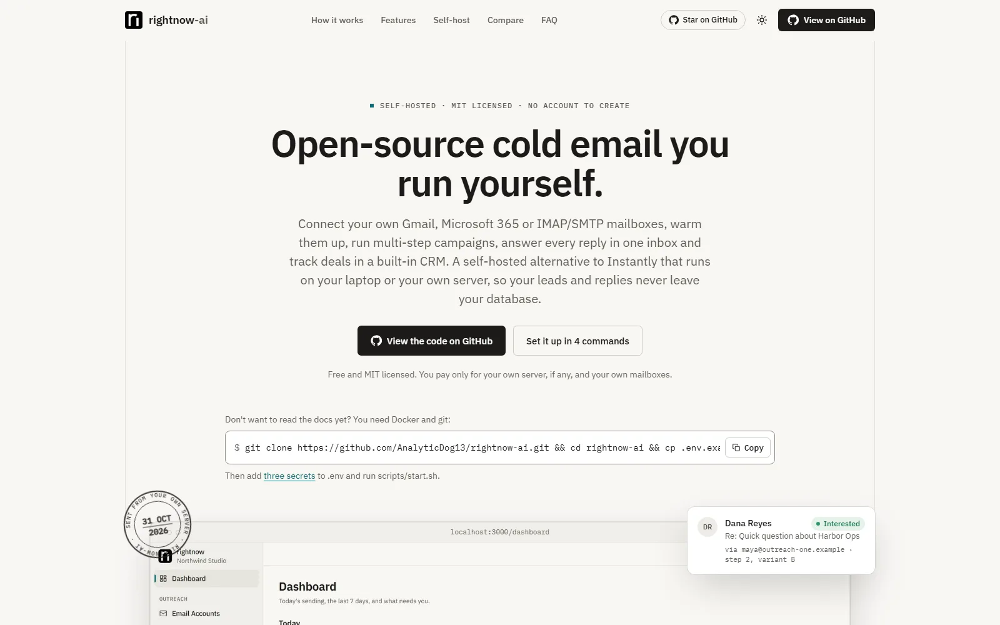
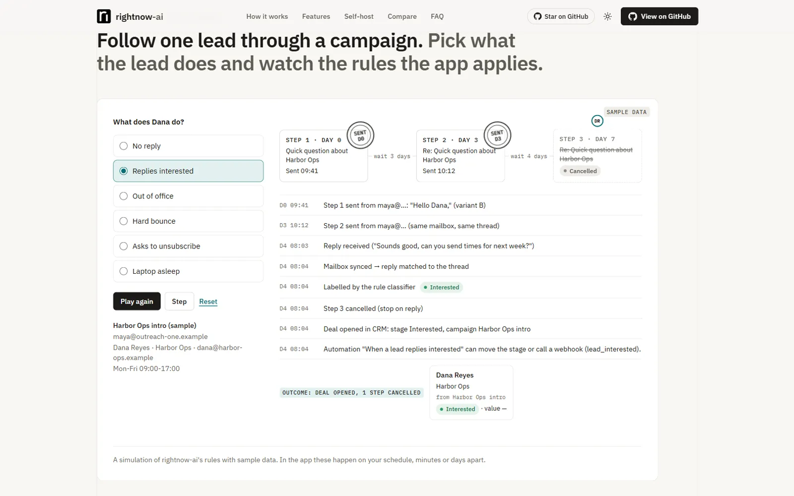
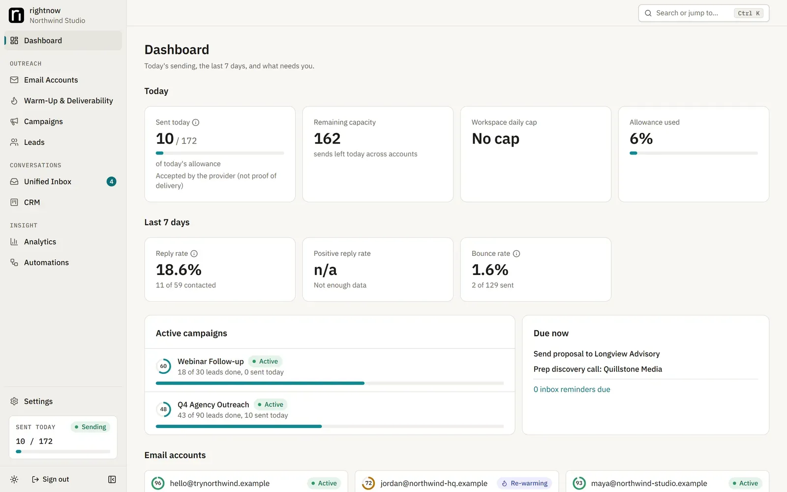
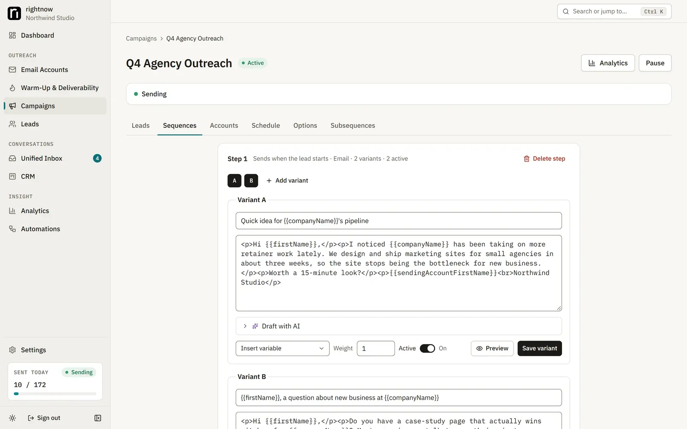
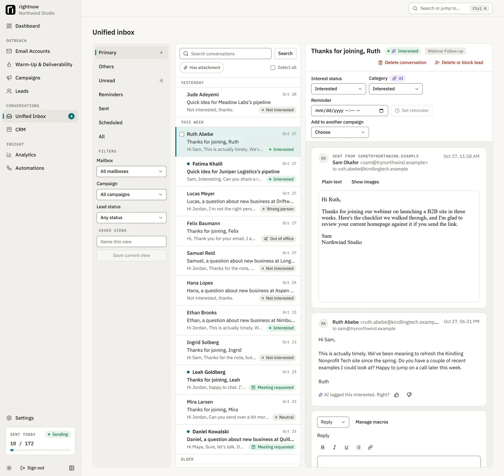
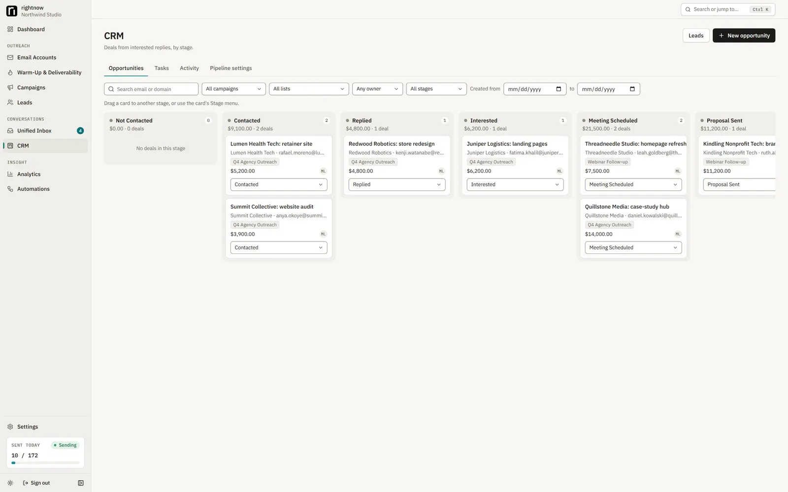

Cold-email tools are usually monthly subscriptions that hold your mailbox logins and your lead lists. rightnow-ai does the same job on your own machine or server. You connect your own Gmail, Microsoft 365 or IMAP/SMTP mailboxes, warm them up, run multi-step campaigns, answer every reply in one inbox, and track deals in a built-in CRM. It is open source under the MIT license.
It is finished: all 8 build phases are done, about 1,290 automated tests and the browser tests pass in CI, and sending has been verified live with real mailboxes. It covers 311 of the 316 items on the feature checklist I wrote before starting.

Explore the launch page. It explains how to use rightnow-ai, how to set it up on a laptop or a VPS, and where the code lives. There is no sign-up or paid plan: you run it yourself.
The launch page
The project is only self-hosted, so its website has one job: show how the tool works and how to run it. To design it, I had agents study 16 open-source and sales-software landing pages (AppFlowy, Attio, Supabase, PostHog, Instantly and others), write a design spec for each, then combine them into one spec for rightnow-ai. Another agent built the page from that spec as plain HTML, CSS and JavaScript, with real screenshots of the app.
It has three hands-on demos that run in the browser, all with sample data and the app's real rules: follow one lead through a campaign and see what happens when they reply, bounce or unsubscribe, or when the laptop is asleep; sort sample replies in a small inbox and watch the CRM update; and plan how much you can send, using the same daily limits and warm-up defaults the app uses.

The campaign simulator: pick what the lead does and watch the rules the app applies. (Sample data.)
Inside the app
Screenshots of the real app, running with sample mailboxes and made-up leads.

The dashboard: today's sending against each mailbox's limit, the last 7 days, and what needs attention.

Building a campaign: steps, delays, merge fields and A/B variants.

The unified inbox: every mailbox's replies in one place, labelled and ready to answer.

The CRM: deals from interested replies, with revenue tracked back to the campaign.
Built in 8 phases
| Phase | What it added |
|---|---|
| 1. Foundation | Monorepo, database, encryption, sign-in and workspaces, background worker, Docker setup with backups |
| 2. Mailbox connections | Gmail, Microsoft 365 and IMAP/SMTP, with encrypted credentials and a shared test suite every provider must pass |
| 3. Campaigns | Lead import, sequences, schedules, quotas, account rotation and a send queue that can't double-send |
| 4. Incoming mail | Inbox sync, threading, reply classification, stop-on-reply rules, open and click tracking, unified inbox |
| 5. Deliverability | DNS checks, health scores with automatic slow-down, warm-up, inbox placement tests, re-warm-up for idle mailboxes |
| 6. CRM and analytics | Kanban pipeline, revenue tracked back to campaigns, dashboards and CSV exports |
| 7. Advanced | Automations, signed webhooks, AI drafting with human approval, 2FA, GDPR export and erasure, accessibility pass |
| 8. Final verification | Cross-system review, a crash-and-resume drill, license check, live tests with real mailboxes |
Sending you can trust
The hard part of a cold-email tool isn't writing the email. It's never sending the wrong one. Everything runs on a single PostgreSQL database, including the job and send queues, so there is no second system to drift out of sync.
- No double sends. A worker claims a message and reserves that mailbox's daily quota in the same transaction, so parallel workers can't overshoot a limit or send twice.
- Catch up before sending. After a crash, an outage or a laptop waking from sleep, a mailbox must sync its replies, bounces and unsubscribes before it may send again. Nobody gets a follow-up after they already replied.
- Unknown means hold. If the app can't tell whether a send went through, it checks the Sent folder. If the copy isn't there, the message is held for a person to decide, never resent blindly.
- Honest by design. Every campaign email carries a working unsubscribe, and warm-up never fakes opens or pulls mail out of spam. It sends plainly labelled messages between your own mailboxes and measures where they land.
How it was built
I wrote the spec and acted as the orchestrator: Claude Code agents implemented each of the 76 tasks test-first, and a separate reviewer agent checked every task before it was merged. Each phase ended with a whole-branch review and a fix round. CI runs the full test suite, a real IMAP/SMTP mail server test and a Docker Compose smoke test on every push. Every design decision and its reason is written down in the repo, about 50 of them in all.
Skills applied
TypeScript, Next.js, React, PostgreSQL, Prisma, concurrency and transactional queues, OAuth (Google and Microsoft), the Gmail and Microsoft Graph APIs, IMAP/SMTP, email deliverability (SPF, DKIM, DMARC), encryption at rest, Docker, CI with GitHub Actions, Vitest, Playwright, and orchestrating AI coding agents.